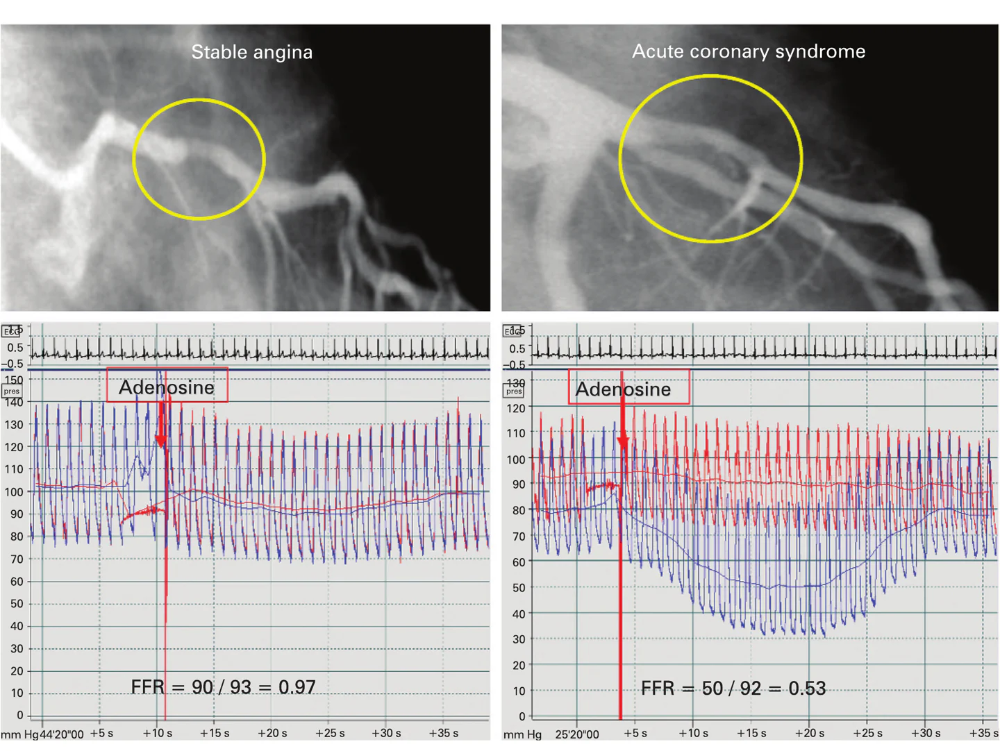
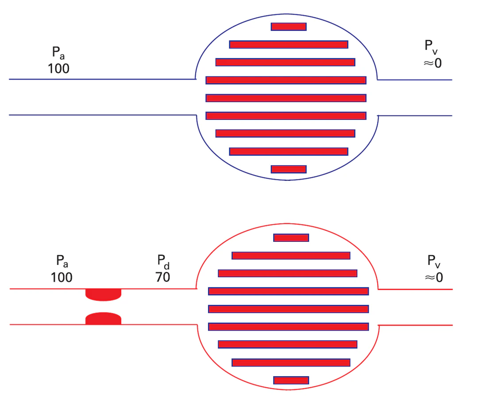
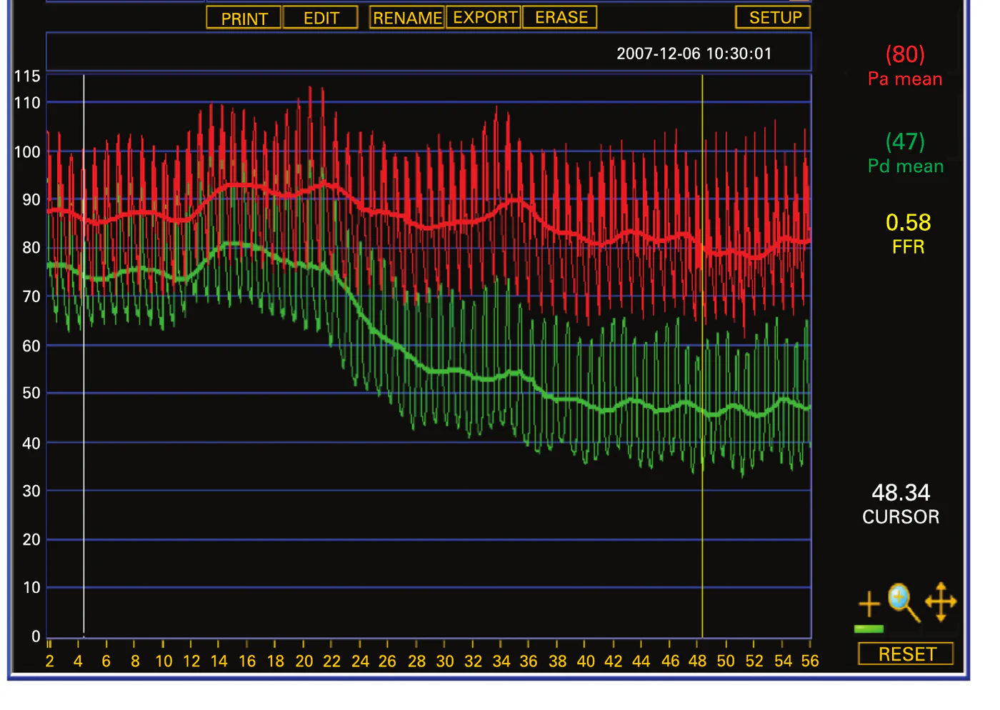

Anatomia não é fisiologia
A angiografia coronária tradicional nos fornece um “mapa” anatômico das artérias do coração, mostrando onde estão as obstruções e qual o seu grau aparente de estreitamento. No entanto, essa imagem bidimensional nem sempre reflete o real impacto funcional daquela lesão. Uma obstrução que parece ser de 70% pode, em alguns casos, não estar limitando o fluxo sanguíneo de forma crítica, enquanto uma que parece de 50% pode estar causando isquemia significativa…

O que é a reserva de fluxo fracionada?
A Reserva de Fluxo Fracionada (FFR) é uma medida fisiológica, realizada durante o próprio cateterismo cardíaco, que avalia exatamente isso: o impacto funcional de uma estenose coronária.
Simplificando, o FFR mede a diferença de pressão sanguínea antes e depois da obstrução, sob condições de hiperemia máxima.
Tecnologia de ponta a serviço da decisão
Em nosso grupo de cardiologistas, investimos em tecnologia de ponta e conhecimento especializado para oferecer diagnósticos e tratamentos cada vez mais precisos e personalizados. O FFR é um exemplo desse compromisso, nos permitindo tomar decisões terapêuticas mais embasadas e, muitas vezes, evitar procedimentos desnecessários, focando no que realmente trará benefício para a saúde do coração.
Se você tem lesões coronarianas obstrutivas, seja avaliado por especialistasComo o FFR é medido
Hiperemia máxima
Um medicamento dilata ao máximo as pequenas artérias, simulando o coração em esforço intenso.
Fio-guia com sensor
Um fio muito fino, com sensor de pressão na ponta, ultrapassa a lesão a ser estudada.
O cálculo Pd/Pa
A pressão medida depois da lesão é dividida pela pressão na aorta. O resultado é o FFR.
Hiperemia máxima
Para entender o verdadeiro impacto de uma obstrução, precisamos ver como ela se comporta quando o coração está trabalhando ao máximo e demandando o maior fluxo sanguíneo possível (como durante um exercício intenso). Durante o FFR, administramos um medicamento (geralmente adenosina) que dilata ao máximo as pequenas artérias do coração, simulando essa condição de esforço máximo. É um estado seguro e transitório, essencial para a precisão do exame.
A medida
Um fio-guia especial, muito fino e com um sensor de pressão em sua ponta, é avançado através do cateter até a artéria coronária, ultrapassando a lesão a ser estudada. Com o coração sob hiperemia máxima, medimos a pressão distal à lesão (Pd) e a comparamos com a pressão na aorta (Pa, antes da lesão). O FFR é o resultado da divisão Pd/Pa.

Como interpretar o resultado
Um valor de FFR de 1.0 significa que não há nenhuma limitação ao fluxo. Quanto menor o valor do FFR, maior o impacto da obstrução no fluxo sanguíneo.
Isquemia significativa
A lesão limita o fluxo de forma relevante. É a situação em que a angioplastia com stent tende a trazer benefício.
Sem isquemia significativa
A lesão não compromete o fluxo de forma crítica. O tratamento clínico otimizado costuma ser a melhor abordagem.

E por que o FFR faz a diferença?
A principal vantagem do FFR é sua capacidade de identificar quais estenoses estão realmente causando isquemia miocárdica (falta de oxigênio para o músculo cardíaco) e, portanto, quais se beneficiariam de um tratamento como a angioplastia com stent.
Os benefícios de usar o FFR para guiar o tratamento incluem:
- Custo-efetividade: ao evitar procedimentos desnecessários, a estratégia guiada por FFR também se mostrou mais custo-efetiva.
- Evitar stents desnecessários: se o FFR de uma lesão intermediária (por exemplo, entre 50% e 70% na angiografia) for superior a 0.80, isso indica que a lesão não está causando isquemia significativa. Nesses casos, o tratamento clínico otimizado (com medicamentos) costuma ser a melhor abordagem, evitando os riscos e custos de um implante de stent que não traria benefício adicional.
- Tratar apenas o que precisa ser tratado: em pacientes com múltiplas lesões, o FFR ajuda a identificar qual/quais delas são culpadas pela isquemia, direcionando o tratamento para as lesões funcionalmente importantes.
- Melhores resultados a longo prazo: estudos clínicos robustos, como o FAME (Fractional Flow Reserve versus Angiography for Multivessel Evaluation), demonstraram que a estratégia guiada por FFR em pacientes com doença coronária multiarterial resulta em melhores desfechos clínicos, incluindo redução de eventos cardíacos adversos maiores (morte, infarto e necessidade de nova revascularização), quando comparada à estratégia guiada apenas pela angiografia.
Em nosso grupo de cardiologistas, a utilização do FFR é uma prática rotineira em casos selecionados, reforçando nosso compromisso com uma medicina baseada em evidências e centrada no paciente.
Além da imagem: uma decisão baseada na fisiologia
A Reserva de Fluxo Fracionada (FFR) revolucionou a forma como avaliamos e tratamos a doença arterial coronariana. Ela nos permite ir além da imagem anatômica, compreendendo o real significado fisiológico de uma obstrução. Ao incorporar o FFR em nossa prática, nosso grupo de cardiologistas reafirma o compromisso de oferecer o tratamento mais adequado, seguro e eficaz para cada paciente, otimizando os resultados e melhorando a qualidade de vida.
Converse com nossos especialistas
Se você tem lesões coronarianas obstrutivas, seja avaliado por especialistas para identificar a necessidade de angioplastia.
Agendar avaliaçãoPerguntas frequentes
O FFR adiciona risco ao cateterismo cardíaco?
O FFR é um procedimento muito seguro. Os riscos adicionais ao cateterismo padrão são mínimos e geralmente relacionados à passagem do fio-guia ou aos efeitos transitórios da adenosina. Nossa equipe experiente toma todas as precauções para minimizar qualquer risco. Explicaremos todos os riscos em uma avaliação presencial.
Se a angiografia mostra uma obstrução, por que não tratá-la sempre com stent?
Colocar um stent quando não é necessário não traz benefício adicional e adiciona os riscos inerentes ao procedimento. A angiografia mostra a anatomia, mas não necessariamente a fisiologia (o impacto no fluxo). Muitas obstruções visualizadas não limitam o fluxo sanguíneo de forma significativa a ponto de requerer um stent. O FFR nos ajuda a identificar precisamente quais lesões se beneficiarão do tratamento, evitando intervenções em lesões que podem ser seguramente manejadas com medicação.
Em quais situações o FFR é mais utilizado?
O FFR é particularmente útil para avaliar lesões coronárias de gravidade intermediária (geralmente entre 40% e 70% de obstrução visual pela angiografia), em pacientes com doença em múltiplas artérias para decidir quais lesões tratar, ou quando há discordância entre os sintomas do paciente e os achados da angiografia ou de testes não invasivos.
Referências
- De Bruyne B, Sarma J. Fractional flow reserve: a review. Heart, 2008;94(7):949-59.
- Tonino PAL, De Bruyne B, Pijls NHJ, et al. Fractional Flow Reserve versus Angiography for Guiding Percutaneous Coronary Intervention (FAME). N Engl J Med, 2009.
- Jeremias A, Kirtane AJ, Stone GW. A Test in Context: Fractional Flow Reserve — Accuracy, Prognostic Implications, and Limitations. J Am Coll Cardiol, 2017;69(22):2748-58.
- Elgendy IY, Conti CR, Bavry AA. Fractional flow reserve: an updated review. Clin Cardiol, 2014.
- Sanz Sánchez J, Farjat Pasos JI, Martinez Solé J, et al. Fractional flow reserve use in coronary artery revascularization: a systematic review and meta-analysis. iScience, 2023.
Créditos das imagens
- Diagrama do conceito de FFR, traçado das pressões e comparação entre as duas lesões — figuras 1, 2 e 5 de De Bruyne B, Sarma J. Fractional flow reserve: a review. Heart, 2008;94(7):949-59.
- Equipe no Centro de Hemodinâmica do Instituto de Neurologia de Curitiba (INC) — acervo OneHeart.
Este conteúdo foi útil? Compartilhe.
Ajude alguém a entender melhor o coração.